Rare Lesions of Female Genital Tract
Rare Lesions
- ”Other” category in TBS for lesions not squamous or glandular
- Broad Categories are:
- Neuroendocrine Tumors
- Mesenchymal Tumors
- Mixed Mullerian Tumors
- Gestational Trophoblastic Disease
- Germ Cell Tumor
- Melanoma
- Lymphoma and Leukemia
- Metastatic Lesions
Neuroendocrine Tumors
- Arise throughout the body
- Common in lung
- Tumors with argyrophilic neurosecretory granules in cytoplasm
- Endocrine hormone production
- Stain positive for neuron specific enolase, chromogranin and synaptophysin
- Also positive for TTF-1, marker confirming lung origin (which is not always the case)
- More common in young to middle-age women
- Three main types:
- Small cell neuroendocrine
- Carcinoid tumors
- Large cell neuroendocrine
- Differentials include metastatic small cell, adeno and squamous carcinomas, lymphomas and leukemias, follicular cervicitis
Neuroendocrine Tumor Types
- Small cell neuroendocrine
- Most common of the three neuroendocrine types
- Peak age 30s to 40s, but can occur throughout life
- Associated with HPV type 18
- Very poor prognosis
- Women may have co-existing hormone production issues
- Cushing syndrome, carcinoid syndrome, hypoglycemia syndrome of inappropriate antidiuretic hormone secretion
- Co-exist with squamous or glandular lesion
- Ranges from well differentiated to poorly differentiated types
- Histologically grows in ribbons, nests and clumps surrounded by dense fibrous stroma
- Hypercellular smears
- Cytologically small clusters and single cells
- Very high N/C ratio
- No cytoplasm
- Small, round to oval, spindly shaped cells with occasional irregular outlines
- Chromatin has distinctive “salt and pepper chromatin” (hallmark of all neuroendocrine tumors)
- Hyperchromatic
- Apoptotic bodies and mitoses
- Nuclear molding and crush artifact (hallmarks of small cell)
- Nuclear molding and crush artifact not seen on LBP
- Carcinoids
- Well differentiated neuroendocrine tumors
- Small aggregates
- Small round uniform cells
- High N/C ratio
- Resemble lymphocytes
- Salt and pepper neuroendocrine chromatin
- No mitotic figures
- Large cell neuroendocrine
- Poorly differentiated and aggressive
- Younger population
- Pattern similar to squamous and glandular lesions
- Cells 3 to 5x normal intermediate cell nucleus
- Moderate cytoplasm
- Multiple nucleoli
- Coarse chromatin, no salt and pepper features
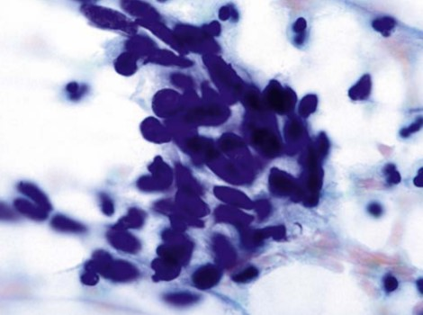
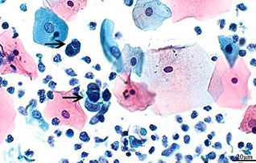
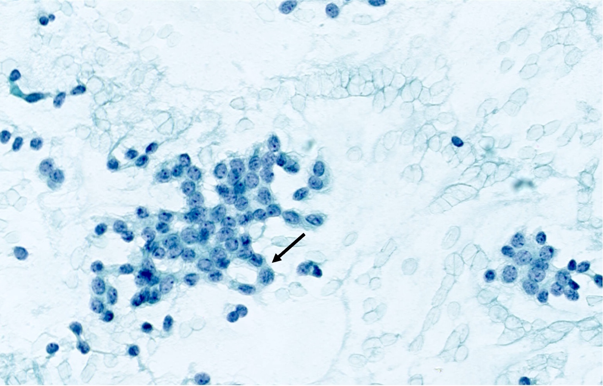
Mesenchymal Tumors
- Benign and malignant tumors
- Benign tumors don’t shed cells
- Epithelium must be ulcerated/denuded
- Sarcomas are malignant mesenchymal tumors
- Account for less than 10% of uterine corpus malignancies
- Sarcomas described as pure=homologous, derived from tissue that is normal to site
- Heterologous derived from cells not native to site-e.g. striated muscle
- Rhabdomyosarcoma-striated muscle tumor arising in myometrium
- Mixed Mullerian tumors contain cells of epithelial and mesenchymal origin
- Mixed Mullerian tumors can contain:
- Epithelial and mesenchymal-both malignant
- One component is malignant other benign
- Both components are benign
Leimyomas
- Leiomyomas are benign smooth muscle tumors
- Most common benign mesenchymal tumor
- Commonly called fibroids
- Abnormal bleeding, pain, infertility, miscarriages
- Most common tumor of the uterus, predominately in myometrium
- Rare in cervix and not observed in Paps unless ulceration of overlapping epithelium
- Cytologically presents as single, spindly cells
- Cigar shaped nuclei with fine, even chromatin, small nucleoli
- Cytoplasm is fibrillary (thin and fiber-like)
- Rare mitotic figures
- Benign metastasizing leiomyoma-spreads through blood vessels to lungs
Mesenchymal Malignant Tumors
- Sarcomas are typically recognizable as malignant
- Hard to classify type
- Rarely observed in Pap tests
- Cells are often degenerated and isolated
- Common single cell pattern of cells
- Cytoplasm often with spindle configurations
- Cytoplasm ranges from fibrillary, granular to glassy
- Stains cyanophilic and orangeophilic
- Poorly defined cell borders
- Nuclei are very anaplastic
- Sarcomas range from low to high grade types on histology
- Small cell types to multinucleated giant cell forms
- Four types sarcomas in uterus:
- Leiomyosarcoma
- Endometrial stromal sarcoma
- Rhabdomyosarcoma
- Ewing/Primitive Neuroectodermal Tumor
Leiomyosarcoma
- Accounts for 50% of sarcomas of uterine body
- Present in women age 40 to 60 years
- Derived from myometrial of endometrial stromal precursor cells
- Associated with MED12 mutations, common mutation in smooth muscle tumors
- Grow as bulky mass in myometrium or as a polypoid mass extend to endometrial cavity
- 5 year survival low in high grade tumors
- Metastasizes via blood vessels to lungs (common route of spread)
- Range from well to poor differentiated tumors
- Well-differentiated tumors very similar to leiomyomas
- High grade sarcomas mimic carcinomas due to anaplasia
- Histologically spindle shaped tumor cells similar to leiomyoma
- Abnormal nuclei with mitotic figures
- More than 10 mitosis per 10 high power fields is sign of malignancy
- Cytology spindle shaped cells presenting singly or in loose clusters
- Range small to large and pleomorphic cells
- Oval to cigar nuclei with fine chromatin in well differentiated
- Poorly differentiated: hyperchromatic nuclei, irregular membranes and prominent nucleoli
- Nuclei have blunt ends
- Cytoplasm is ill defined, transparent or fibrillary
- Myxoid background-clear, mucoid substance
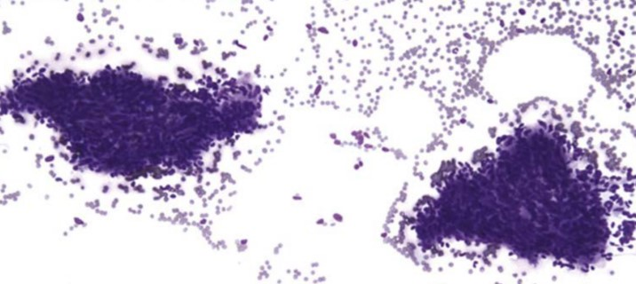
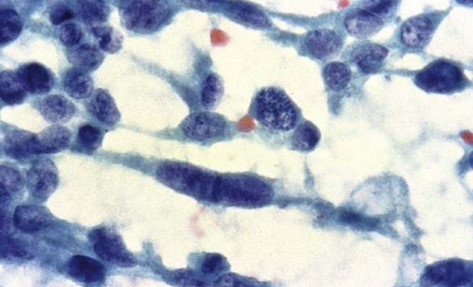
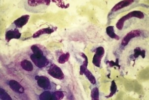
Endometrial Stromal Sarcoma
- Stromal sarcomas account for 40% of uterine sarcomas
- Present in women in 5th decade with abnormal bleeding
- Low and high grade types histologically, majority are low grade
- Low grade tumors have less than 3 mitotic figures per hpf
- High grade = 10 mitosis in each of 10 hpf
- Low grade tumors associated with chromosomal translocation in JAZF1 with SUZ12-oncogenic expression
- Low grade stromal sarcomas resemble normal endometrial stromal cells
- Main clue is numerous stromal cells
- Singly and in groups
- Uniform, small and and plump sometime spindle or comet shaped
- High N/C ratio
- Round, granular hyperchromatic chromatin with micronucleoli
- Ill defined borders
- High grade has different chromosomal translocations
- Small to medium oval to elongated cells
- Large, hyperchromatic nuclei, prominent nucleoli
- Scant, basophilic, fibrillar cytoplasm
- Tumor diathesis
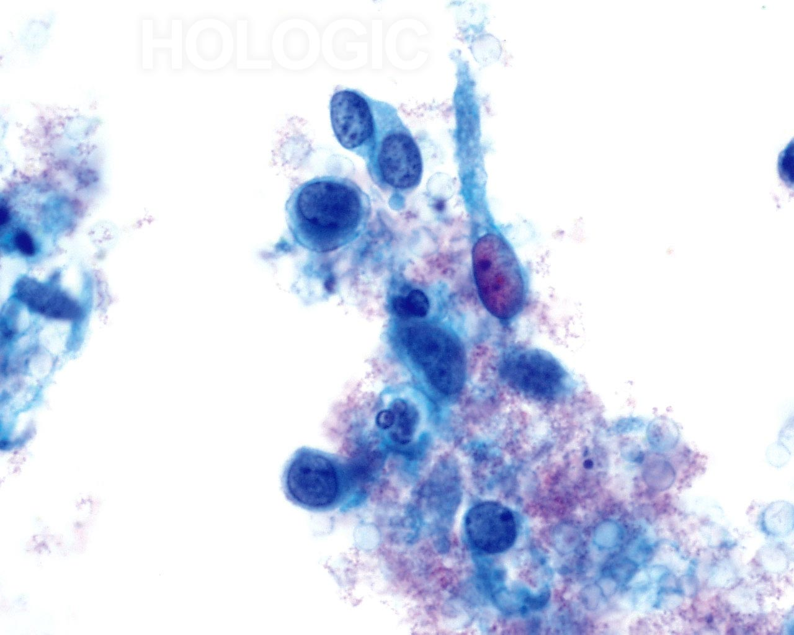
Rhabdomyosarcoma
- Rare malignant tumor of striated muscle
- Classified as a small round blue cell tumor
- Most common vaginal neoplasm of infants and children-most before 5 years
- Sarcoma botryoid is rhabdomyosarcoma: grape-like clusters protruding vaginal opening
- 90% 5 year survival, good prognosis
- Three variants-embryonal, alveolar and pleomorphic
- Embryonal tumor with spindly and strap cells (tadpole shapes)= rhabdomyoblasts in myxoid background
- Bizarre forms as well
- Cross striations in cytoplasm is hallmark, but rare
- Oval and elongated nuclei, irregular membranes
- Stains positive with desmin
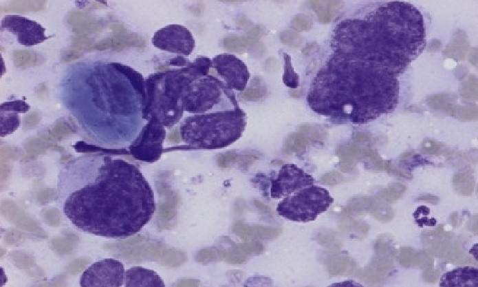
PNET tumors
- Small round blue cell tumor from fetal neuroectodermal cells
- Postmenopausal women
- Small to medium cells with round to oval hyperchromatic nuclei
- Granular chromatin
- Positive with neuroendocrine markers
Mixed Mullerian Tumors
- Comprised of epithelial and mesenchymal components
- Arise primarily in endometrium
- Main types
- Carcinosarcoma or malignant mixed Mullerian tumor
- Comprised of malignant epithelial and mesenchymal components
- Aggressive, post menopausal women, presents as fungating mass
- Typically an adenocarcinoma and sarcoma
- Adenocarcinoma may be endometrial endometroid, serous or clear cells
- Sarcoma may be homologous-native such as leiomyosarcoma or heterologous=foreign cell type such as rhabdomyosarcoma
- Cytology consists of sparse, degenerated cells
- Necrosis and blood
- Adenocarcinoma sheds more readily than sarcomatous
- Clues will be additional atypical but spindly cells
- Adenosarcoma
- Differential for carcinosarcoma
- Benign glandular component with malignant mesenchymal component
- Carcinofibroma
- Adenocarcinoma with benign mesenchymal cells
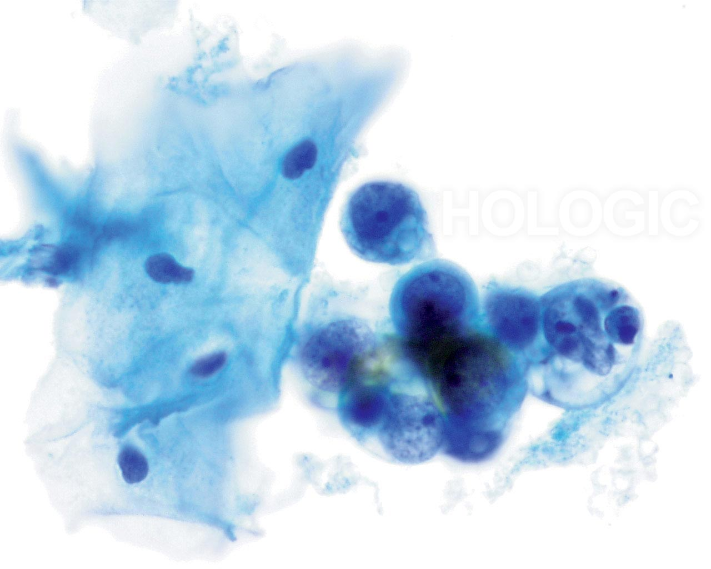
Gestational Trophoblastic Disease
- Neoplasms associated with pregnancy associated trophoblastic tissue
- Normal placenta comprised of chorionic villi
- Central tissue with overlapping epithelium
- Gestational neoplasms:
- Hydatidiform mole
- Invasive mole
- Choriocarcinoma
- Placental site trophoblastic tumor
- Epithelioid trophoblastic tumor
- First trimester- Normal placenta with chronic villa. Layer of epithelium-syncytiotrophoblasts outer and cytotrophoblasts inner lining
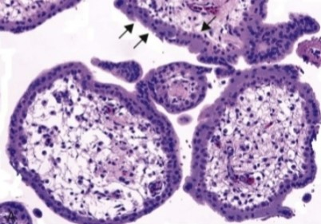
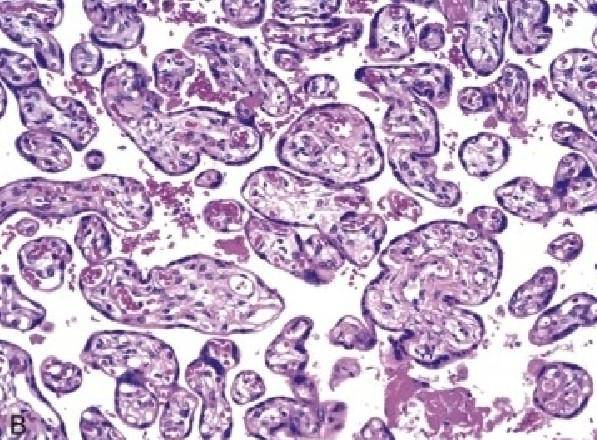
Hydatidiform Moles
- Cystic swelling or chorionic villi with trophoblastic proliferation
- Associated with early weeks pregnancy
- Women suffer miscarriages
- Occurs in every 2000 pregnancy in US
- Higher rates in Southeast Asia
- More common in teenage and 40s
- Partial and complete moles
- Complete moles:
- Fertilization of eggs with no female chromosomes only male, or empty egg with two sperm
- Embryo dies early-less progression to choriocarcinoma
- Complete moles have human chorionic gonadotrophin (HCG) levels higher than levels of normal pregnancy (clinical clue)
- Partial mole:
- Fertilization of egg with two sperm
- Results in triploid karyotype 69, XXY
- Higher risk to develop choriocarcinoma
- Both result in proliferation of chorionic villi
- Patients with history of moles are monitored for persistent high HCG levels
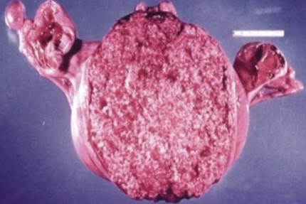
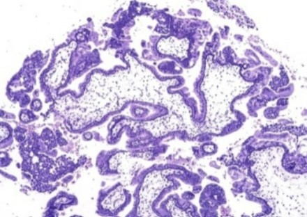
Invasive Mole
- Able to penetrate uterine wall and blood vessels
- Go to distant sites such as lung where it can form emboli-not true metastasis
Choriocarcinoma
- Very aggressive-spreads via blood vessels to lung and vagina, brain, liver
- Arises from trophoblasts in reproductive age women-gestational choriocarcinoma
- B-HCG levels vary but high
- Survival depends on stage
- Also arises from germ cells-may see in males
- Biphasic proliferation–two cell types
- Proliferation of syncytiotrophoblasts and cytotrophoblasts
- Cytotrophoblasts are malignant
- Syncytiotrophoblasts are benign
- Malignant cytotrophoblasts large, parabasal size cells
- Large nuclei with coarse chromatin, prominent nucleoli
- Bloody necrotic background
Placental Site Trophoblastic tumor
- Intermediate trophoblasts and low B-HCB levels
Epithelioid Trophoblastic Tumor
- High B-HCG
- Mimics squamous carcinoma
Melanoma
- More common in lower vaginal canal than cervix
- Poor prognosis-death in 2 years
- Polypoid vaginal mass with PMB
- Single cells, small to large, range oval to spindle shapes, pleomorphic to bizarre
- Nuclei are pale to dark, often eccentric
- Prominent nucleoli with intranuclear cytoplasmic invaginations
- Dense to dense cytoplasm
- Brown to black melanin pigment is main clue-not always present
- Mimics all malignant neoplasms
- Tumor diathesis
- No association with HPV
Lymphoreticular malignancies-Lymphomas and Leukemias
- Hodgkin's and Non-Hodgkin's Lymphomas, leukemias and myelomas
- More common in cervix than endometrium
- Considered primary if confined to cervix only
- Most occur via secondary involvement
- More common in middle age patients
- Presents as PMB with cervical barrel shaped mass
- Diffuse, non-Hodgkin’s B cell lymphoma is most common
- Burkitt’s and follicular are next common
- Markers needed for confirmation
- Sampled in on cytology only with ulceration
- Pattern varies, clinical history of mass is needed
- Main clue is numerous lymphocytes
- Monomorphic population of abnormal lymphocytes
- High N/C ratios with smooth to irregular chromatin
- Nucleoli are evident
- Protrusions or nipples
- Scanty, indistinct cytoplasm
- Background lots of karyorrhexis-fragmented lymphocytes
- Hodgkin's, myeloid tumors (eosinophilic myeloid cells) and plasmacytomas (plasma cell proliferation) are very rare
- Main differential is follicular cervicitis-contains Tingible body macrophages (TBM).
- Lymphomas do not have TBM-"cilia" of lymphocytic process
Fallopian Tube Carcinoma
- Postmenopausal, nulliparous women
- Teenage population as well
- Vaginal bleeding
- Main clue is colicky abdominal pain and profuse watery discharge
- Most are serous adenocarcinoma-papillary and glandular clusters
- Must be considered when Pap test, dilation and curretage of endometrium are negative
- No other primary known
Metastasis
- Met to vaginal canal/cervix is rare. Found on autopsy
- Patients typically have known primary
- May have same symptoms of primary lesions
- Any malignancy can spread to cervix
- Direct extension from adjacent organs-endometrium, GI, bladder, pelvis
- Most common metastatic process
- Ovary-patients with ascites
- Breast-lobular breast ca
- GI-colorectal
- Lung
- Melanoma
- Adenocarcinoma is the main type of metastatic malignant neoplasm
Metastatic Process
- Fewer cells than primary cervical/uterine carcinomas
- Cells look different than primary cancers
- Foreign-bit of floater appearance
- Background is clean 80% cases, no tumor diathesis
- Direct extension tumors more tumor diathesis
- Can get clues to site of origin
Key Features
- Important feature
- Important feature
- Important feature
Key Point
Add an important concept that you want to remember.
Cytologic Findings
Describe the cytologic findings here.
XXXXX Cells
Key Features
- MORPHOLOGY
Differential Diagnosis
| Entity | Distinguishing Features |
|---|---|
| Example | Describe the distinguishing features. |
Images

References
- Author. Title of article. Journal Name. Year;Volume(Issue):Pages.
- Author. Title of second article. Journal Name. Year;Volume(Issue):Pages.